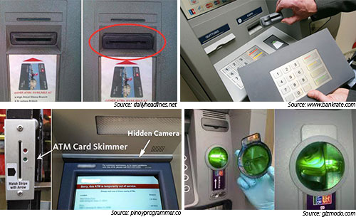

ATM and POS Skimming
ATM SKIMMER AND CARD SKIMMING METHOD
I believe that everyone heard about credit card frauds and ATM or POS skimming. But how much you know about the way those atm skimmer work? And what actually a skimmer is? How are the bank cards cloned? Well if you want to know the answer to even one of this questions keep reading.
A skimmer is a device which read and record the data from the magnetic strip of a card.The most hunted are the ATM skimmers because usual they are build somehow to record the PIN as well .If you want to avoid be victim of a fraud then you must understand how the atm skimmer works.
About ATM Skimmers
An ATM skimmer has two parts.The first is the reader which read and store the dump.Usual this reader is hidden in a fake ATM bezel attached over the real ATM slot. Because carder are very careful with the details like shape ,color or size and the bezels match so good with the ATM those skimmers are not easy to detect.To build the skimmer is not very difficult.Almost all the parts are easy to find and legal to buy. Let’s have a look.
Bezel or “mouth” of the ATM is the fake ATM slot.In this bezel are fixed the other skimmer parts.The bezel can be hand made but also it can be bough from sites like ebay. Because selling a skimmer bezel is illegal,seller hide their utility under name of ATM anti-skimmer slot or anti-fraud device.Here is how a bezel look like
Reader is the most important part of the skimmer. It is the part of the skimmer which read and store the dumps. Same as in case of bezel, the reader is sold online under different names. It can be purchase with amounts between $800 and $1500, price depend on the memory storage capacity and the size of the reader.
Magnetic head is the part of the skimmer which in contact with the magnetic strip of the card read the data encoded in the strip. The dump is the stored in the reader of the skimmer.
Beside this 3 important parts of the skimmer ,to build it carder will need just a few more common things like short pieces of wire, glue, etc.
Some ATM slot are big enough so a mini video camera can be hidden inside.But if the bezel is to thin and the camera won’t fit in it, then the carder hide the camera on the ATM in different ways,but with the same target, to record the PIN.
Some other way to record the PIN are the PIN PAD or fake keyboard .This fake keypad look similar with the real ATM key and usual is glued .
About POS skimmer or so called Offline POS
Did ever happen to you to try to use your card in a store and after the card is swiped on the POS some error message appear on the screen?The clerk swiped the card in an other POS?Ops,it is possible that the first POS was an offline POS ,a skimming device placed in the store for collect the dumps from the costumers cards.The Offline POS looks like a genuine POS but it not communicate with any bank.It is only used for skimming.So you should pay attention if in store your card is swiped in more then 1 POS.
ATM Skimmers
Mini hand skimmers or Mini MSR
Mini msr or magnetic card reader are some device used to read and record the data encoded in the magnetic strip of the cards (dump)..The smaller mini msr have size of a lighter or even shorter and thinner .Most common places where this devices are used are the places where the card is sent to the counter and the costumer is not there when card is swiped.Such places are restaurants and coffee shops ,where the payment is done on the table.The waiter usual takes the costumer card and goes to the counter to swipe it.In his way from the table to counter he swipe the card through the mini msr.
ATM Skimmers
CVV and Fullz Cashout – Online Shopping
Today I want us to talk about online shopping using CVV or Fullz. If your bank bill came and it shows that you bought some stuff online, don’t fight your kids and wife…first make sure your card was not used illegally by someone who you never met.
Online shopping is an easy way to cash out CVV and Fullz which most of you probably already know but if there is anyone who still need help with it, here you have it. Carder use this method from long time but because many of them are very smart and do it hidden their IP this kind of fraud is very difficult to stop. If you want to know more about how is done, keep reading
Necessary stuff
-VPN
-SOCKS
-fresh CVV or Full
-cardable site
-drop
Way to work
Step 1- carders prepare their computer
For keep their IP hidden ,carder have the VPN connected and SOCKS applied.
Almost all carders clean browser history before any new work.
Because some gate payments verify this details carders set the time/date to match with the location of CVV holder They also change the browser language. (if you living in Europe and you using an USA cvv ,make sure the time/date of the computer is USA time zone and language of browser is English). After the computer correct set ,they are ready for next step.
Step 2-Usual a new email address and a Voip (virtual private phone number) are created
For this yahoo, hotmail or other e-mail hosting are used.To make it look more genuine, the details of CVV holder create a new e-mail address.It help if in the email address appear the name of the CVV holder.
Almost all web shops verify the phone number or call to confirm the order so carders have a Voip phone number to fill in the payment page on web store.The Voip can be get very fast from www.skype.com. Once the carder has the e-mail address and the Voip he moves to next step.
Step 3-order the desired product
All the sites which sell products are cardable site.Carders go to the web shop and select the product they intend to buy.When they choose the site where they want to card with CVV carders make sure it has shipping to an other address then billing address. Also the best sites are those which have next day shipping option. Add their desire product in the cart and click to check-out. The site will redirect to the payment page. Some sites will require to create a new account so the e-mail address which was created will be used to get a new account then continue with the check-out
– “Billing details” form will be fill up with the details with the CVV holder
– “Shipping details” form will be fill up with the details of the drop
If the CVV is alive carder should get a confirmation with “Transaction Approved”.Usual almost all sites will send e-mail with the order details. Carder keep the Voip ready to receive call and they are ready to talk with the costumer care of the site.
Step 4 – pickup product
If your transaction was approved then you will receive your product in the drop address you used.
Tips
For a successful online transaction carders try to have IP of the SOCKS as close as possible with the living area of the CVV holder.(if the address from CVV is in Detroit then pick a SOCKS for Detroit)
The area code of the Voip must be same as the CVV area.
Carders try to have their order placed in the evening time so the CVV holder chance to observe that someone used his card will decrease.You probably think now that is better then to do this when is late night in the area of the CVV holder but this not true.
Almost all site won’t do any other verification is the billing and shipping address is same.You must know that some banks not allow third parties to access private information of their costumers,so if carders try to find BIN without address verification .If they got such BIN’s they can use the drop address as billing address.
After carder placed the order they are prepare to receive a call from the site.They may call to confirm the order.It is possible that except from details from CVV (name,address.card details) the operator of the site to ask why request the shipping to an other address ,so have good answer to this question. “Is a gift for my ….. ” may work but is not the best. Carders also use to tell that they moved in a new place recently and they didn’t had time to go to the bank and change the billing address.